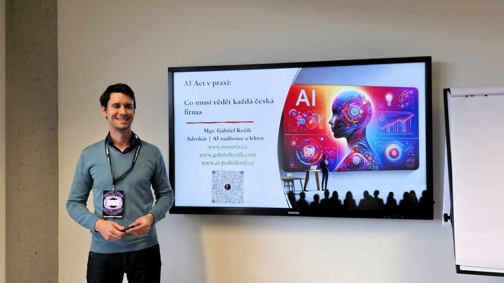
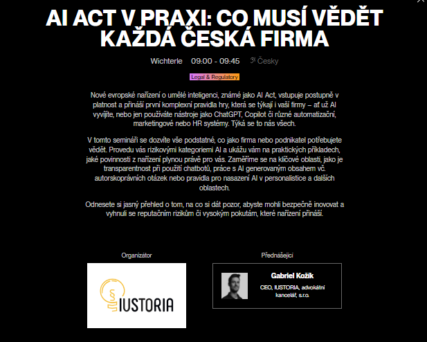
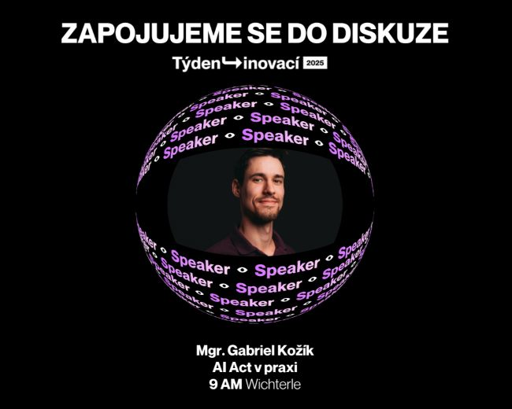

AI Act v praxi: Ohlédnutà za Týdnem inovacà 2025
MinulĂ˝ tĂ˝den, ve dnech 9. a 10. Ĺ™Ăjna, se Praha opÄ›t stala epicentrem technologickĂ©ho dÄ›nĂ ve stĹ™ednĂ EvropÄ›. V modernĂch prostorách ÄŚSOB Kampusu probÄ›hl jubilejnĂ roÄŤnĂk TĂ˝dne inovacĂ a já jsem byl hrdĂ˝, Ĺľe naše advokátnĂ kancelář IUSTORIA mohla bĂ˝t u toho jako partner akce. Byla to neuvěřitelná smršť nápadĹŻ, vizĂ a inspirativnĂch setkánĂ.

Regulace, která nenĂ strašákem, ale pĹ™ĂleĹľitostĂ
MÄ›l jsem tu ÄŤest vystoupit se seminářem na tĂ©ma "AI Act v praxi: Co musĂ vÄ›dÄ›t kaĹľdá ÄŤeská firma". CĂlem bylo demystifikovat novĂ© evropskĂ© naĹ™ĂzenĂ o umÄ›lĂ© inteligenci a ukázat, Ĺľe se nejedná o byrokratickou brzdu, ale o promyšlenĂ˝ rámec pro bezpeÄŤnĂ© a dĹŻvÄ›ryhodnĂ© inovace. Probrali jsme si klĂÄŤovĂ© body, kterĂ© rezonovaly s publikem sloĹľenĂ˝m z podnikatelĹŻ a manaĹľerĹŻ:
- PĹ™Ăstup zaloĹľenĂ˝ na riziku: VysvÄ›tlili jsme si, Ĺľe AI Act nezatěžuje všechny firmy stejnÄ›. NejvÄ›tšà povinnosti dopadajĂ na vysoce rizikovĂ© systĂ©my, zatĂmco pro vÄ›tšinu běžnĂ˝ch AI nástrojĹŻ (jako jsou chatboti nebo generátory obsahu) je klĂÄŤová hlavnÄ› transparentnost.
- PraktickĂ© dopady: Na pĹ™Ăkladech jsme si ukázali, co znamená povinnost informovat uĹľivatele, Ĺľe interagujĂ s AI, nebo jak správnÄ› oznaÄŤovat marketingovĂ˝ obsah vytvoĹ™enĂ˝ umÄ›lou inteligencĂ.
- Odpovědnost a data: Zdůraznili jsme, že odpovědnost za použità AI nese vždy firma, která ji nasadila. To klade obrovský důraz na výběr prověřených dodavatelů a ochranu citlivých dat v souladu s GDPR.


Energie, která pohánà budoucnost
Celá akce byla nabitá pozitivnĂ energiĂ. Z kaĹľdĂ©ho rohu kampusu byl cĂtit pulz inovacà – lidĂ© se potkávali, sdĂleli nápady a domlouvali novĂ© spolupráce. TĂ˝den inovacĂ znovu potvrdil, proÄŤ je klĂÄŤovou událostĂ pro kaĹľdĂ©ho, kdo chce nejen sledovat trendy, ale aktivnÄ› tvoĹ™it budoucnost ÄŤeskĂ©ho byznysu.
DÄ›kuji organizátorĹŻm za skvÄ›lou práci a všem, kteřà se zastavili na mĂ©m semináři. UĹľ teÄŹ se těšĂm na dalšà roÄŤnĂk a na to, jak se myšlenky z letošnĂho setkánĂ promÄ›nĂ v reálnĂ© projekty.
↠Zpět na přehled článků